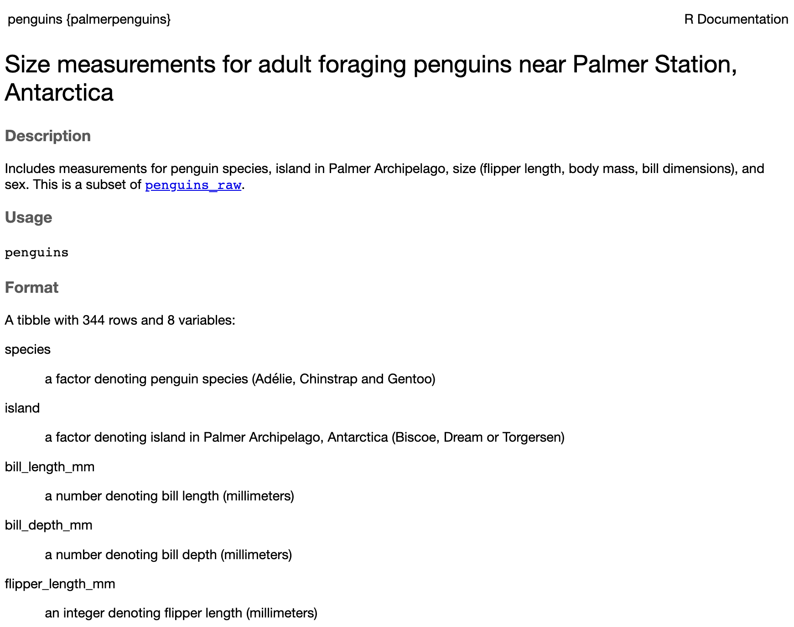
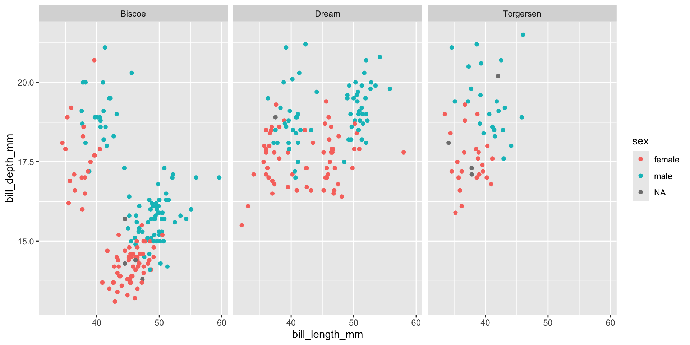
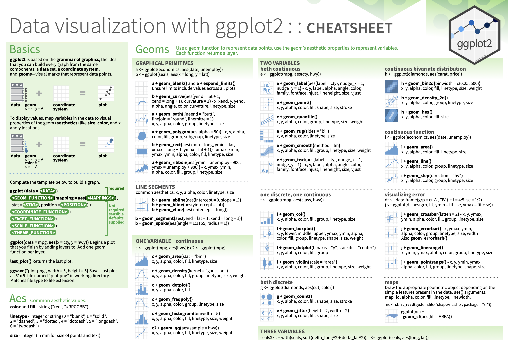
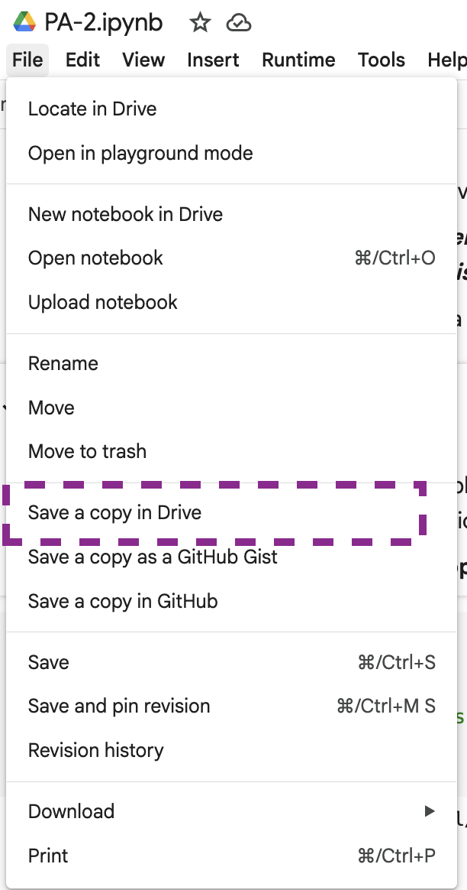
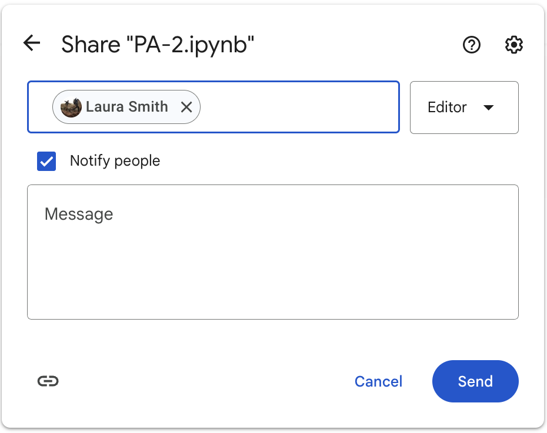

library(palmerpenguins)
?penguinsBasics of Graphics
Tuesday, October 1
Today we will…
- Warm-up for
ggplot2practice activity (30-minutes) - Set-up for the practice activity (15-minutes)
- Review pair programming norms
- Learn how to access practice activities
- Find your partner!
- Complete practice activity (60-minutes)
Data Context for Today

What do you notice about these data?
Grammar of Graphics
The Grammar of Graphics (GoG) is a principled way of specifying exactly how to create a particular graph from a given data set. It helps us to systematically design new graphs.
Think of a graph or a data visualization as a mapping…
…FROM variables in the data set (or statistics computed from the data)…
…TO visual attributes (or “aesthetics”) of marks (or “geometric elements”) on the page/screen.
How to Build a Graphic
Complete this template to build a basic graphic:
Notice, every + adds another layer to our graphic.
Tip
Notice that I’m using named arguments to make my code easier to read.

What do you expect to see after running this code?
![An image of a gray square with white gridlines representing a plotting canvas where the variables have been assigned to the x and y aesthetics. On the x-axis there is a variable named 'class' with seven different values mapped to a particular white gridline---2seater, compact, midsize, minivan, pickup, subcompact, suv. On the y-axis there is a variable named 'hwy' with three printed values mapped to different white gridlines---20, 30, and 40. The spaces between these gridlines represent values between the printed values (e.g., 25).](ggplot-short_files/figure-revealjs/add-variables-to-aesthetics-1.png)
Aesthetics
We map variables (columns) from the data to aesthetics on the graphic using the aes() function.
What aesthetics can we set?
- x, y
- color, fill
- linetype
- shape
- size
Tip
See ggplot2 cheat sheet for more!
Geometric Objects
Wee use a geom_XXX() function to represent data points.
one variable
geom_density()geom_bar()geom_dotplot()geom_histogram()geom_boxplot()
two variable
geom_point()geom_line()
Tip
See ggplot2 cheat sheet for more!
Creating a Graphic
To create a specific type of graphic, we will combine aesthetics and geometric objects. When sitting down to create a plot, it’s great to start with a game plan!
- What variables are you interested in?
- What types of variables are these?
- Where do you want to put each of these variables? (i.e., what
aesthetics) - What type(s) of
geometries do you need?
How many penguins were captured on each island?
- What type of variable is
island?
- What type of plot would you make for this type of variable?
- What
geomwould you use to get this plot?
What are the most common bill lengths for the penguins included in these data?
- What type of variable is
bill_length?
- What type of plot would you make for this type of variable?
- What
geomwould you use to get this plot?
What is the relationship between a penguin’s bill length and body mass?
- What type of variables are
bill_lengthandbody_mass?
- What type of plot would you make for these types of variables?
- What
geomwould you use to get this plot?
How would you recreate this plot?
What additional code would you add to make the plot more clear?
PA 2: Using Data Visualization to Find the Penguins

Artwork by Allison Horst
Using Data Visualization to Find the Penguins
This puzzle activity will require knowledge of:
- types of variables
- types of visualizations
- what visualization(s) go with different variable types
- ggplot2 functions to create visualizations
- choosing between different aesthetic options
None of us have all these abilities. Each of us has some of these abilities.
Pair Programming Expectations
During your collaboration, you and your partner will alternate between two roles:
Developer
- Reads prompt and ensures Coder understands what is being asked.
- Types the code specified by the Coder into the Quarto document.
- Runs the code provided by the Coder.
- Works with Coder to debug the code.
- Evaluates the output.
- Works with Coder to write code comments.
Coder
- Reads out instructions or prompts
- Directs the Developer what to type.
- Talks with Developer about their ideas.
- Manages resources (e.g., cheatsheets, textbook).
- Works with Developer to debug the code.
- Works with Developer to write code comments.
Group Norms
- Think and work together. Do not divide the work.
- You are smarter together.
- Be open minded.
- No cross-talk with other groups.
- Communicate with each other!
ggplot2 Resources
Every person should have a ggplot2 cheatsheet!
On the Front
- Column 1: the “template” for making a ggplot
- Column 3: creating plots for two continuous variables
- Column 4: creating plots for one discrete or one continuous variable
On the Back
- Column 4: adding facets and labels to your plot
- Column 3: adding themes to your plot (if you have extra time)

Opening the Practice Activity in Google Colab
The partner whose family name starts first alphabetically starts as the Developer! The Developer needs to:
- Click on the Practice Activity 2 link from Canvas
- Log-in to your Google account
- Make a copy of the Colab notebook

Sharing with Your Partner
Once you have your copy, you need to:
- Share your copy with your partner’s Google account
- Make sure the Coder can open the file
- The Developer should plug their laptop into the monitor
- The Coder should close their computer
- Get started!

Submission
When you have completed the visualization tasks, you will work as a group to answer the five questions posed at the end of the document.
Each person will input the answers to these questions in the PA2 Canvas quiz.
The person who last occupied the role of Developer will print the notebook as a PDF and submit the PDF for the group.
- Only one submission per group!